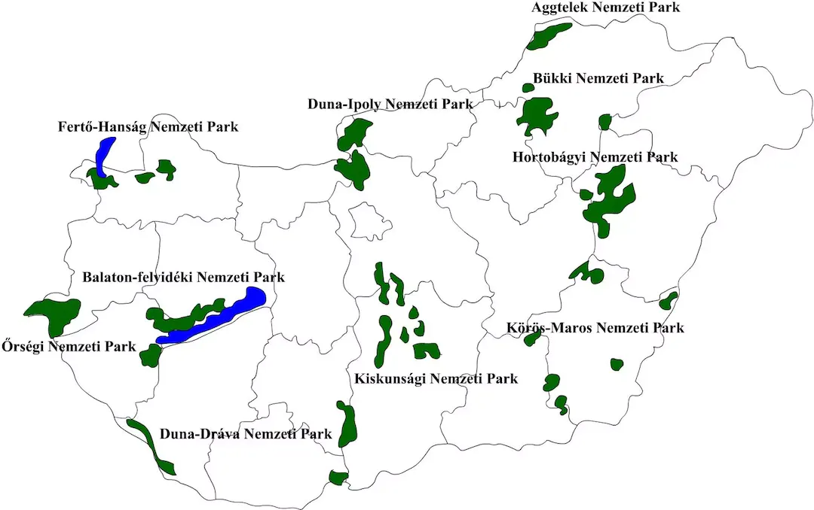

Magyarország 10 Nemzeti Parkja
Az utóbbi években a magyar nemzeti parkok nagy népszerűségnek örvendenek, így fel is lendítették a hazai turizmust. Nem csoda, hiszen kis hazánk is büszkélkedik számtalan mesés vidékekkel, amiknek többsége nemzeti parkokban található.
Az ország minden táján találsz természetvédelmi területet, és ha elkezdjük összeszámolni őket, meg sem kell állnunk egészen 10 nemzeti parkig.
A parkok az ország különböző pontjain helyezkednek el. Ha szeretnénk családunkkal, vagy barátainkkal felfedezni egyet, nem kell sokat utaznunk - bárhol is lakjunk. Unatkozni sem fogunk, hiszen nincs két egyforma terület.
Íme hát Magyarország mind a 10 nemzeti parkja terület mérete szerint csökkenő sorrendben.
